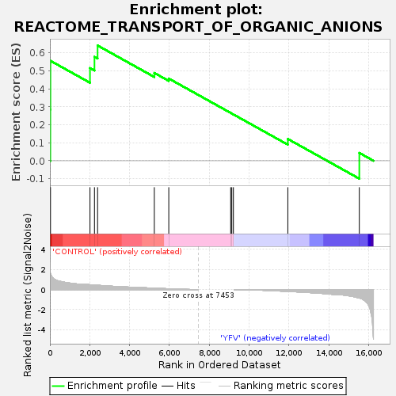
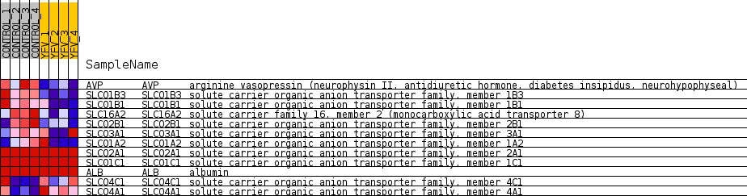
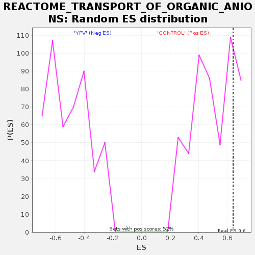

| Dataset | MATRIZ_GSE99081_collapsed_to_symbols.gsea_CLASE_99081.cls#CONTROL_versus_YFV |
| Phenotype | gsea_CLASE_99081.cls#CONTROL_versus_YFV |
| Upregulated in class | CONTROL |
| GeneSet | REACTOME_TRANSPORT_OF_ORGANIC_ANIONS |
| Enrichment Score (ES) | 0.6413344 |
| Normalized Enrichment Score (NES) | 1.2917054 |
| Nominal p-value | 0.16190477 |
| FDR q-value | 0.9857808 |
| FWER p-Value | 1.0 |

| SYMBOL | TITLE | RANK IN GENE LIST | RANK METRIC SCORE | RUNNING ES | CORE ENRICHMENT | |
|---|---|---|---|---|---|---|
| 1 | AVP | arginine vasopressin (neurophysin II, antidiuretic hormone, diabetes insipidus, neurohypophyseal) | 23 | 1.687 | 0.2852 | Yes |
| 2 | SLCO1B3 | solute carrier organic anion transporter family, member 1B3 | 28 | 1.596 | 0.5561 | Yes |
| 3 | SLCO1B1 | solute carrier organic anion transporter family, member 1B1 | 2012 | 0.482 | 0.5157 | Yes |
| 4 | SLC16A2 | solute carrier family 16, member 2 (monocarboxylic acid transporter 8) | 2237 | 0.450 | 0.5784 | Yes |
| 5 | SLCO2B1 | solute carrier organic anion transporter family, member 2B1 | 2393 | 0.427 | 0.6413 | Yes |
| 6 | SLCO3A1 | solute carrier organic anion transporter family, member 3A1 | 5240 | 0.134 | 0.4888 | No |
| 7 | SLCO1A2 | solute carrier organic anion transporter family, member 1A2 | 5966 | 0.079 | 0.4575 | No |
| 8 | SLCO2A1 | solute carrier organic anion transporter family, member 2A1 | 9073 | 0.000 | 0.2661 | No |
| 9 | SLCO1C1 | solute carrier organic anion transporter family, member 1C1 | 9129 | 0.000 | 0.2627 | No |
| 10 | ALB | albumin | 9209 | 0.000 | 0.2578 | No |
| 11 | SLCO4C1 | solute carrier organic anion transporter family, member 4C1 | 11941 | -0.187 | 0.1213 | No |
| 12 | SLCO4A1 | solute carrier organic anion transporter family, member 4A1 | 15528 | -0.845 | 0.0438 | No |

